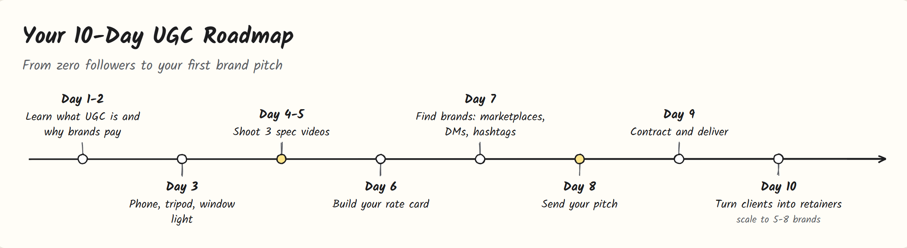
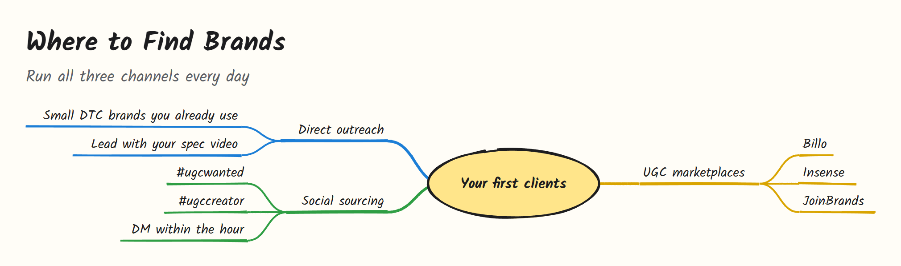
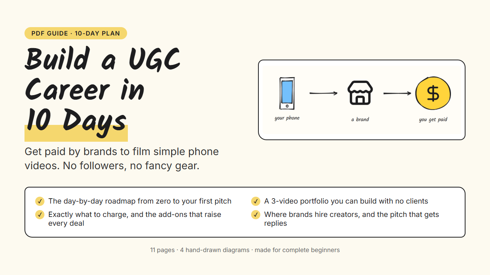
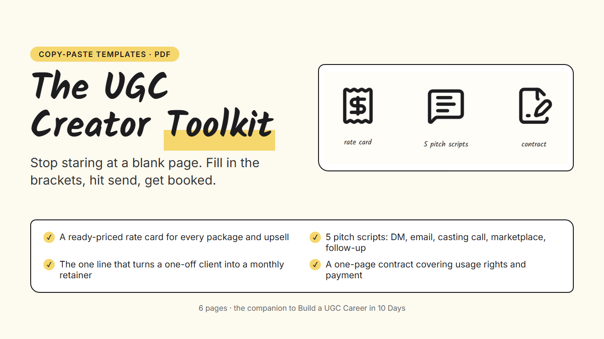

Brands pay regular people to film simple, phone-shot videos for their ads. You don't need an audience, a studio or any experience. Here's the whole plan on one page.
Get the full guide
UGC stands for user-generated content. A brand pays you to make a video that looks like a real customer filmed it, then posts it on its own accounts or runs it as an ad. The video goes on their page, not yours, which is why your follower count doesn't matter.
Ads that look like real people talking to a phone camera tend to hold attention better than polished studio ads, so brands test lots of them and need a steady supply of creators.
Don't rely on one channel. Run all three every day.

Typical starting ranges for beginners. Raise them once you have five finished deals.
| Package | Typical starting price |
|---|---|
| Single video, organic use | $75-125 |
| 3-video pack | $200-325 |
| Paid ad usage add-on | +$50-100 per video |
| Monthly retainer, 4 videos | $400-700 per month |
These are common ranges, not promises. Results depend on your niche, your pitching and how many brands you reach. Most people start earning little while they build a portfolio.
This page is the overview. The guide has the day-by-day detail, and the toolkit gives you the rate card, scripts and contract ready to fill in.

Build a UGC Career in 10 Days. 11 pages, day by day, with hand-drawn diagrams.

A ready-priced rate card, 5 pitch scripts and a one-page contract. Fill in the brackets and send.
Everything above in one bundle. $48 bought separately, $39 together.
Instant PDF download. Checkout and delivery are handled by Gumroad.
No. Brands pay for the video itself, which they post on their own accounts or run as ads. It never needs to go on your profile.
A phone from the last few years, a small tripod and a window for natural light. Most beginners spend under $150 in total.
Beginners commonly start around $75-125 per video with organic use, plus add-ons for paid ad usage. Rates vary and nothing is guaranteed.
Make three spec videos for real brands, then apply on UGC marketplaces, message small direct-to-consumer brands and answer casting calls on Instagram and TikTok.